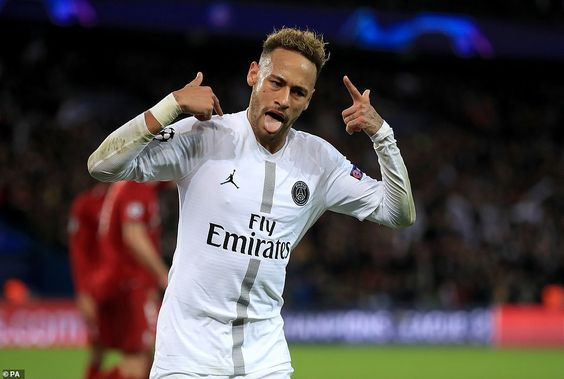

Neymar-The Undisputed Hero
One of the bests out there---- He's one of the most complete forwards World Football. And by complete, I mean he can score goals, assist, make defense-splitting passes, take freekicks,
take penalties and do almost everything that's possible for a player of his physical attributes..
If he had Messi or Ronaldo’s dedication to the game,
then I might choose him ahead of the two legends. That's how good he can be.
How good is Neymar Jr at football?
Ahh, would love to answer this question!
- He missed 10 Ligue 1 games this season but he is still 3rd on the top scorer list and 4th on the most assists list. That's how good he is.
- He was Uefa Champions League 2014/15 top scorer. How many players have been here?
- He has been in the top 3 of Ballon D Or twice- once in 2015 and then in 2017. Not many players have the luxury.
- He was footballer of the year for Brazil in 2011. Amongst a squad filled with star studded players.
- He has over 240 goals and around 150 assists till now- both a goalscorer and playmaker
- He won the FIFA Club World Cup Bronze Ball in 2011
- He was the Copa Libertadores top scorer and top assist provider in 2012
- He won the Puskas Award in 2011.
- He won the FIFA Confederation Cup Golden Ball and Bronze shoe in 2013. Impact.
- He won the FIFA World Cup Bronze Boot in 2014. Beast.
- In his just first season with PSG, he won the Ligue 1 player of the year. Hate him, he will still perform.
- He was the UEFA Champions League top assist provider in 2015–16 and 2016–17. Playmaker.
- He was the Copa Del Rey top scorer in 2014–15
What other players think about Brazil's favorite No.10 at the moment?
Feedback Area